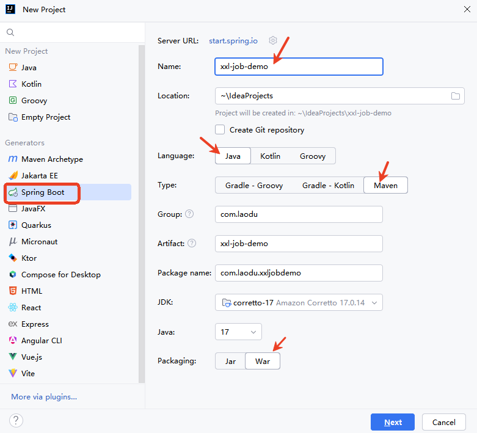
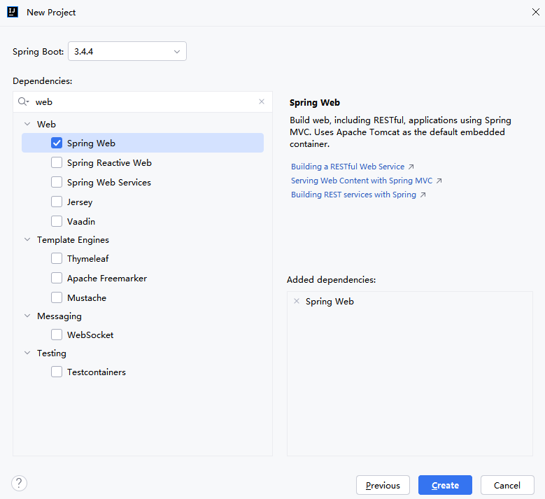
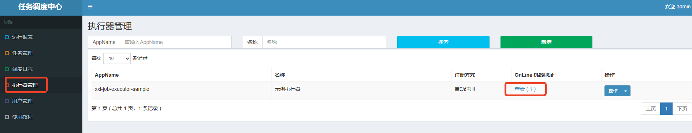

目前port总结
9090：调度中心
9999：执行器
8088：客户端

添加Spring Web依赖：

添加xxl-job-core公共依赖：
<dependency>
<groupId>com.xuxueli</groupId>
<artifactId>xxl-job-core</artifactId>
<version>3.0.0</version>
</dependency>
执行器项目的配置文件application.properties
### 调度中心部署根地址 [选填]：执行器通过这个地址通知调度中心任务的执行结果
xxl.job.admin.addresses=http://127.0.0.1:9090/xxl-job-admin
### 调度中心通讯TOKEN [选填]：非空时启用；
xxl.job.admin.accessToken=default_token
### 执行器连接调度中心时的超时时间
xxl.job.admin.timeout=3
### 执行器AppName [选填]
xxl.job.executor.appname=xxl-job-executor-sample
### 告诉调度中心，我执行器所在的地址。
xxl.job.executor.address=
### 执行器IP
xxl.job.executor.ip=127.0.0.1
### 执行器端口号
xxl.job.executor.port=9999
### 执行器运行日志文件存储磁盘路径 [选填]
xxl.job.executor.logpath=/data/applogs/xxl-job/jobhandler
### 执行器日志文件保存天数 [选填]
xxl.job.executor.logretentiondays=30
server.port=8088
注意：最好配置上server.port=8088，因为调度中心已经将8080占用了。
编写一个配置类，来进行执行器组件的配置：
@Configuration
public class XxlJobConfig {
@Value("${xxl.job.admin.addresses}")
private String adminAddresses;
@Value("${xxl.job.admin.accessToken}")
private String accessToken;
@Value("${xxl.job.executor.appname}")
private String appname;
@Value("${xxl.job.executor.address}")
private String address;
@Value("${xxl.job.executor.ip}")
private String ip;
@Value("${xxl.job.executor.port}")
private int port;
@Value("${xxl.job.executor.logpath}")
private String logPath;
@Value("${xxl.job.executor.logretentiondays}")
private int logRetentionDays;
// 将执行器对象纳入IoC容器
@Bean
public XxlJobSpringExecutor xxlJobExecutor() {
XxlJobSpringExecutor xxlJobSpringExecutor = new XxlJobSpringExecutor();
xxlJobSpringExecutor.setAdminAddresses(adminAddresses);
xxlJobSpringExecutor.setAccessToken(accessToken);
xxlJobSpringExecutor.setAppname(appname);
xxlJobSpringExecutor.setAddress(address);
xxlJobSpringExecutor.setIp(ip);
xxlJobSpringExecutor.setPort(port);
xxlJobSpringExecutor.setLogPath(logPath);
xxlJobSpringExecutor.setLogRetentionDays(logRetentionDays);
return xxlJobSpringExecutor;
}
}
@Component
public class SimpleXxlJob {
@XxlJob("demoJobHandler")
public void demoJobHandler() throws Exception{
System.out.println("执行定时任务，执行时间：" + new Date());
}
}
执行Spring Boot项目入口程序，打开浏览器，访问调度中心，点击执行器管理，可以看到有一个执行器，如下图：
